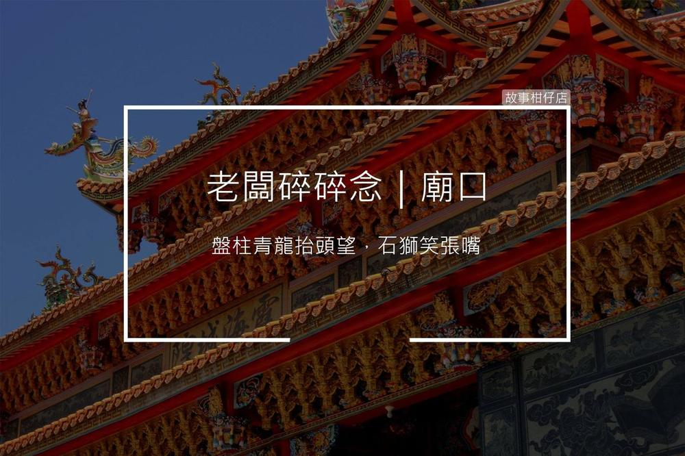

廟口
2018-03-17

大家好，我是老闆「那個誰」，人生苦短，不如聽個「故事」解解悶？
苦甘蔴薏：
「歡鑼喜鼓咚得隆咚鏘，鈸鐃穿雲霄，盤柱青龍探頭望，石獅笑張嘴，紅燭火檀香燒，菩薩滿身香，祈祝年冬收成好，遊子都平安～～」
開頭放這首歌，就洩漏了老闆我的年紀，還記得這首歌當時傳遍大街小巷，人人會哼。
這首廟會一出，就會勾起人人心中那一個鞭炮鑼鼓喧天的廟口廣場，也會聞到陣陣烤香腸的氣味，厲害一點的，還會在眼前浮現幾尊大仙尪仔威武晃蕩。
老闆小時最愛在某間天后廟口嬉戲奔跑，也愛觀察廟內香客的舉動。
有人誠心閉目口中唸唸有詞；有人手拿號碼，不停擲盃；有人手抱孩子，吃力地插香；還有人來此互相賭誓。
廟口就像一個電影院，廟內播著每個人的小劇場，他們在喜樂中揚眉，在悲傷中頓首，廟堂放映一個又一個的人生，香煙承載一個又一個的願望，杳杳飄升直達天聽。
而我，就坐在這喜怒哀樂中，漸漸長大，不知不覺也成了其中一個舉香頓首的人，期望孩子平安喜樂，家人無恙，然後順便偷窺一下隔壁跪著的太太，有沒有甚麼故事，可以讓我填上柑仔店的瓶中，再偷偷地說與你聽。
--無論你是誰，給我你的故事，我告訴你不知道的自己--